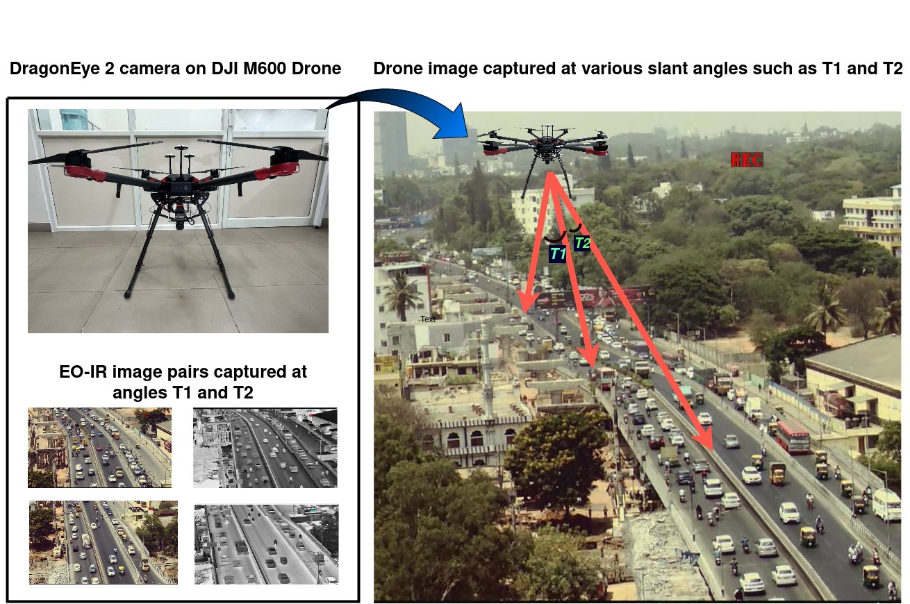

SSL-RGB2IR: Semi-Supervised RGB-to-IR Image-to-Image Translation for Enhancing Visual Task Training in Semantic Segmentation and Object Detection
Abstract
RGB-based perception models degrade significantly under low-light and adverse visibility conditions where infrared (IR) sensing is far more reliable, yet large-scale annotated IR datasets remain scarce. We propose SSL-RGB2IR, a semi-supervised RGB-to-IR image-to-image translation framework that synthesizes realistic IR imagery from abundant labeled RGB data, propagating existing semantic segmentation and object detection annotations into the IR domain without requiring manual IR labeling. By combining supervised translation losses on a small labeled IR subset with consistency-based semi-supervised learning on unlabeled IR data, our framework produces IR training data that meaningfully improves downstream segmentation and detection performance. Extensive experiments demonstrate that models trained with our synthesized IR data significantly outperform baselines trained on limited real IR annotations, offering a scalable path toward robust multi-spectral perception for robotic systems operating in low-light and IR-only conditions.
Placeholder abstract — replace with the exact text from the paper.
Results

RGB-to-IR translation results used to train downstream segmentation and detection models.
BibTeX
@inproceedings{sikdar2024sslrgb2ir,
title={SSL-RGB2IR: Semi-Supervised RGB-to-IR Image-to-Image Translation for Enhancing Visual Task Training in Semantic Segmentation and Object Detection},
author={Sikdar, Aniruddh and Saadiyean, Qiranul and Anand, Prahlad and Sundaram, Suresh},
booktitle={2024 IEEE/RSJ International Conference on Intelligent Robots and Systems (IROS)},
pages={5017--5023},
year={2024},
organization={IEEE},
url={https://ieeexplore.ieee.org/document/10802815}
}